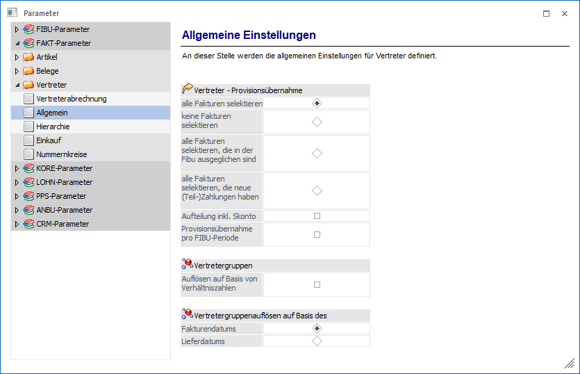
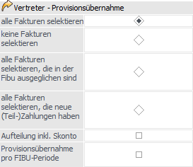
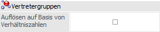
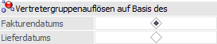

Über den Bereich "FAKT-Parameter - Vertreter - Allgemein" können die allgemeinen Einstellungen für die Vertreterprovision definiert werden.
Hinweis
Standardmäßig wird das Fenster in einem "Lesemodus" geöffnet, d.h. es können die bestehenden Einstellungen kontrolliert, Änderungen allerdings nicht durchgeführt werden. Hierfür muss zunächst mit Hilfe des Buttons "Bearbeiten" der "Bearbeitungsmodus" aktiviert werden. Alternativ kann diese Aktivierung auch über das Kontextmenü der rechten Maustaste (Funktion "Applikation xxx bearbeiten") erfolgen.

Vertreter - Provisionsübernahme

Ø Provisionsübernahme
Hier kann eingestellt werden, welche Provisionszeilen bei der Provisionsübernahme automatisch aktiviert werden sollen. Dabei gibt es 4 Möglichkeiten:
ü alle Fakturen selektieren
Mit
dieser Option werden alle Provisionszeilen, die gemäß den Einstellungen in die
Tabelle gefüllt werden, zur Übernahme aktiviert.
ü keine Fakturen selektieren
Mit
dieser Option werden keine Provisionszeilen, die gemäß den Einstellungen in die
Tabelle gefüllt werden, über Übernahme aktiviert.
ü alle Fakturen selektieren, die in
der FIBU ausgeglichen sind
Mit dieser Option werden nur jene
Provisionszeilen, die gemäß den Einstellungen in die Tabelle gefüllt werden,
aktiviert, die in der WinLine FIBU komplett bezahlt (Mahnzähler < 0) wurden.
Dabei können nur die Provisionszeilen berücksichtigt werden, für die es eine OP
in der FIBU gibt.
ü alle Fakturen selektieren, die
neue (Teil-)Zahlungen haben
Mit dieser Option werden nur jene
Provisionszeilen gemäß den Einstellungen in die Tabelle gefüllt und aktiviert,
für die in der WinLine FIBU eine neue (Teil-)Zahlung erfasst wurde. Dabei können
nur die Provisionszeilen berücksichtigt werden, für die es einen Offenen Posten
in der Finanzbuchhaltung gibt.
Ø Aufteilung inkl. Skonto
Durch Aktivierung der Option "Aufteilung inkl. Skonto" wird der Skontobetrag, den sich ein Kunde abzieht, nicht berücksichtigt, während bei deaktivierter Option die um die Skonti verminderten Werte ins Vertreterübernahmejournal übergeben werden.
Ø Provisionsübernahme pro FIBU-Periode
Wird diese Option aktiviert, so wird bei der Provisionsübernahme pro FIBU-Periode geprüft, ob es neue Zahlungen gibt bzw. wie viel für diese FIBU-Periode bereits übernommen wurde. Pro FIBU-Periode wird eine zusätzliche Zeile in der Übernahmetabelle angezeigt aus der ersichtlich ist, für welche FIBU-Periode, wie viel übernommen wird. Diese zusätzlichen Zeilen können nicht getrennt von der "Hauptzeile" selektiert oder deselektiert werden.
Vertretergruppen

Ø Auflösen auf Basis von Verhältniszahlen
Standardmäßig erfolgt die Aufteilung von Vertretergruppen nach Prozentsätzen. Damit kann auch eine Aufteilung von mehr oder weniger als 100 % erfolgen. Wird diese Checkbox aktiviert, dann erfolgt die Aufteilung der Vertretergruppen nach Verhältniszahlen - in dem Fall werden dann immer 100 % aufgeteilt.
Vertretergruppenauflösen auf Basis des

Ø Vertretergruppen auflösen auf Basis des Fakturendatums / Lieferdatums
Je nach Einstellung wird hier definiert, ob die Prüfung des Gültigkeitszeitraumes für die Vertretergruppenaufteilung auf Basis des Fakturen- oder Lieferdatums erfolgen soll.